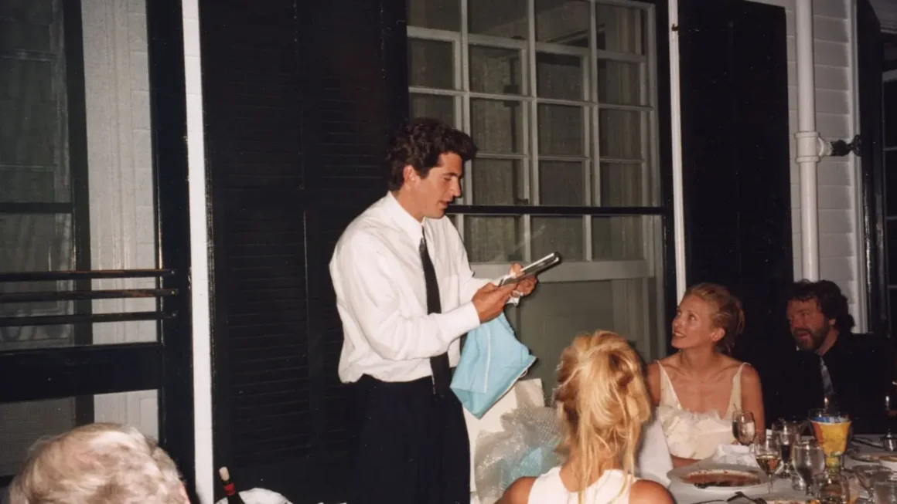
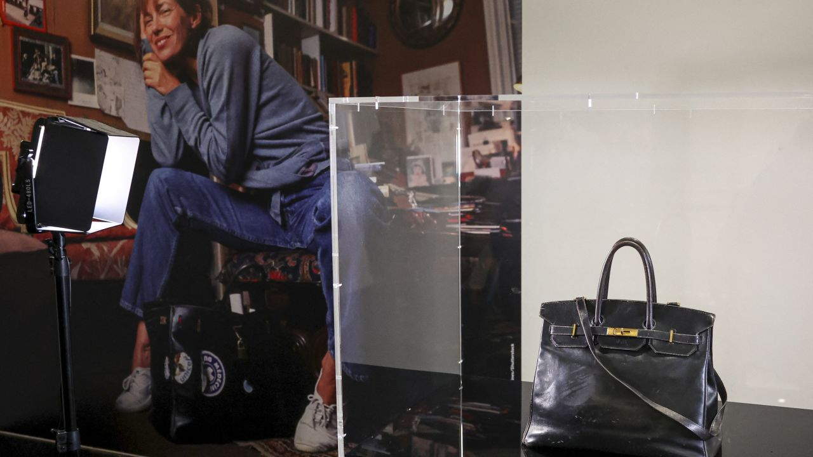
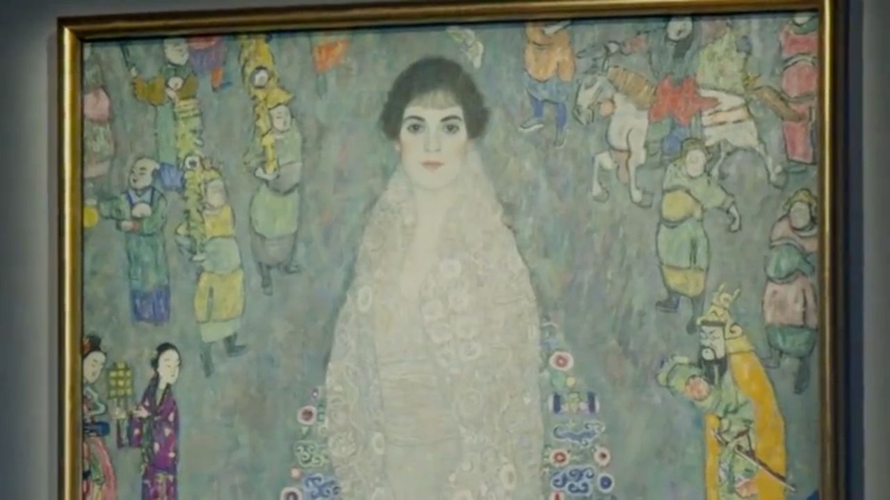
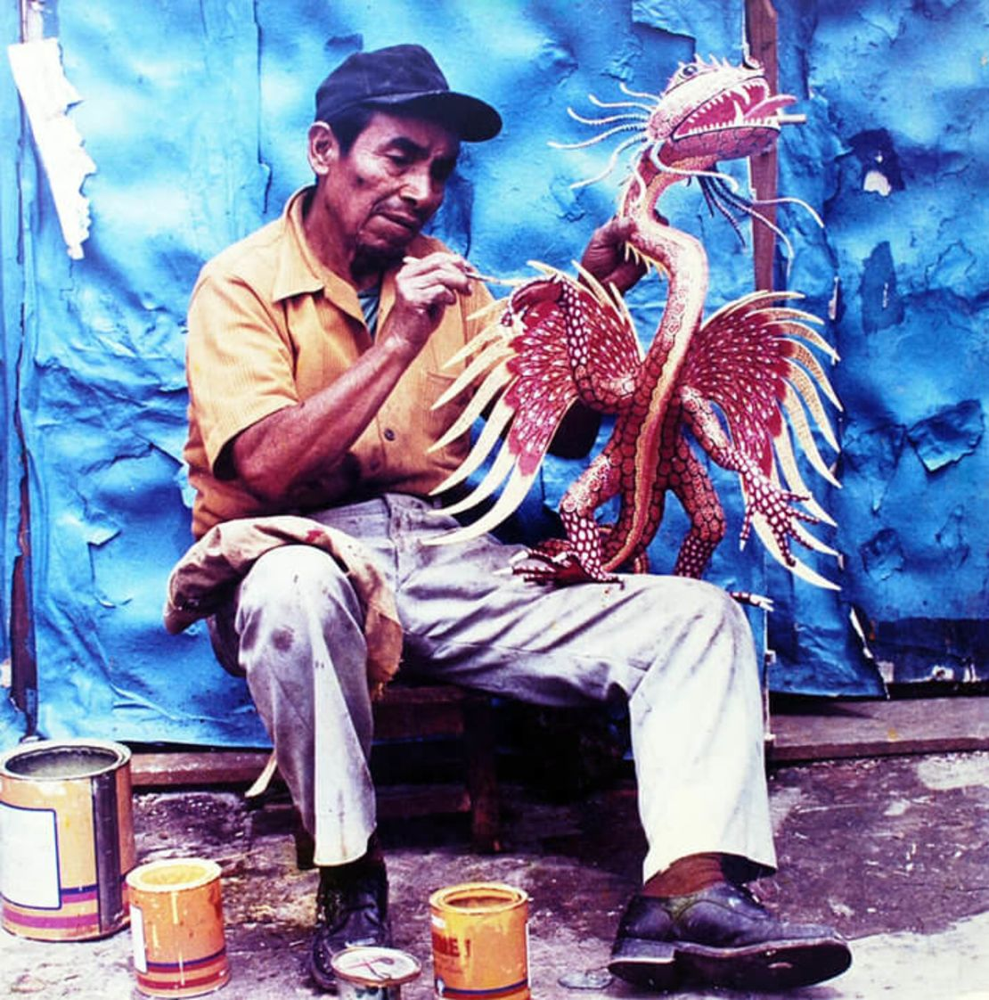

Sumérgete en el pensamiento de la época a través de reseñas de teatro, literatura y artes visuales. Entendemos la cultura como el espejo de nuestra sociedad y te ofrecemos las claves para interpretarla.
Después de meses de especulación, Anna Wintour nombra a Chloe Malle para el principal puesto de Vogue
Por: CNN Español
crosa@sns.gob.do
Después de meses de especulación sobre quién reemplazaría a la editora jefa más famosa de la moda, Anna Wintour ha designado a la nueva editora principal en Vogue, aunque el puesto no es exactamente el codiciado cargo que Wintour ocupó durante casi 40 años.
Chloe Malle, quien actualmente se desempeña como editora de Vogue.com, asumirá el cargo de jefa de Contenido Editorial de Vogue US, anunció la revista en su propio sitio web este martes. Además de dirigir la orientación editorial del sitio web en su anterior puesto, en 2022, Malle se convirtió en la voz de Vogue, copresentando el único podcast actual de la revista, “The Run-Through with Vogue”, junto con Chioma Nnadi, jefa de Contenido Editorial al otro lado del Atlántico para British Vogue.
Exclusiva CNN: fotos inéditas de la boda secreta de JFK Jr. y Carolyn Bessette-Kennedy

Por: CNN Español
crosa@sns.gob.do
Fueron una de las parejas más publicitadas del mundo, pero mantuvieron su boda en secreto, incluso para algunos de los invitados.
Al inicio del otoño, en una iglesia de una sola habitación en la isla Cumberland de Georgia, John F. Kennedy Jr. (JFK Jr.) y Carolyn Bessette-Kennedy se casaron en 1996 frente a sus familiares y amigos más cercanos. A pesar del ambiente relajado de la celebración ese fin de semana —la pequeña y rústica capilla, la pista de baile improvisada al aire libre y las fogatas nocturnas en la playa—, la boda se volvió legendaria, y la elección poco convencional de Bessette-Kennedy de un elegante vestido lencero ha redefinido el estilo nupcial.
¿Qué se siente gastar US$ 10 millones en un bolso? Esto dice el hombre que compró el Hermès original de Jane Birkin

Por: CNN Español
crosa@sns.gob.do
La venta récord del bolso original Hermès de Jane Birkin fue una de las subastas más notables de los tiempos modernos.
La batalla de ofertas entre nueve postores el mes pasado comenzó con una oferta de un millón de euros que instantáneamente lo convirtió en el bolso más caro de todos los tiempos. Pero cuando las ofertas alcanzaron los seis millones de euros, estalló un aplauso espontáneo en la usualmente contenida sala de subastas de Sotheby’s en París. Tras caer el martillo del subastador en los siete millones de euros —lo que significa que, tras las comisiones, un comprador por teléfono que en ese momento era anónimo pagaría el equivalente a US$ 10,1 millones por el bolso—, estallaron vítores. Al otro lado del teléfono, a más de 9.600 kilómetros de distancia, el empresario japonés Shinsuke Sakimoto estaba procesando lo que acababa de hacer.
Un raro cuadro de Klimt se convierte en la obra de arte moderno más cara jamás vendida en una subasta

Por: CNN Español
crosa@sns.gob.do
¿Qué tienen en común un notorio inodoro de oro y un cuadro de Klimt casi destruido? Ambos inauguraron la primera subasta de Sothebys en su nueva sede de Estados Unidos en Nueva York el martes por la noche, en una velada animada y llena de récords.
Al principio, el cuadro principal de Gustav Klimt, “Retrato de Elisabeth Lederer”, se convirtió en la obra de arte moderno más valiosa jamás vendida en una subasta, alcanzando los US$ 236,4 millones entre exclamaciones y aplausos durante la guerra de ofertas de 20 minutos.
¿Cómo llegó a Argentina el cuadro robado durante el nazismo? La historia de Friedrich Kadgien
Por: CNN Español
crosa@sns.gob.do
Todo comenzó con un aviso inmobiliario, que podría haber pasado desapercibido, como uno más de las tantas propiedades en venta en Mar del Plata, destino vacacional de muchos argentinos. Pero unos periodistas holandeses detectaron algo más: en la publicación aparecía un cuadro que habría sido robado durante la ocupación nazi en Europa. ¿Cómo llegó esta obra al living de una casona de esta popular ciudad balnearia?
“Retrato de una dama”, del artista italiano Giuseppe Ghislandi, la obra que se podía ver inicialmente en el aviso inmobiliario, según reportó el periódico holandés Algemeen Dagblad, fue traído a Argentina por Friedrich Kadgien, según confirmaron los investigadores e historiadores consultados por CNN. Kadgien puede resultar un desconocido para el gran público, pero tuvo un papel destacado en la economía del regimen nazi y terminó sus días en Mar del Plata, donde hoy vive una de sus hijas, Patricia. Ella enfrenta una investigación judicial luego de que se diera a conocer que ese cuadro estaba en su casa
Los alebrijes: la artesanía mexicana de cartón que nació por un sueño en un barrio de la Ciudad de México

Por: CNN Español
crosa@sns.gob.do
El 19 de octubre cientos de alebrijes gigantes desfilaron en carros alegóricos por las avenidas principales de la Ciudad de México. ¿Qué son y qué representan?
Los alebrijes son criaturas fantásticas o míticas hechas con cartonería que nacieron de un sueño profundo del artesano mexicano Pedro Linares López, quien enfermó y quedó inconsciente y, según él, se le revelaron las criaturas extrañas.
“Cuando él despierta de ese trance empieza a sentir una mejoría en su salud y a recordar lo que había soñado. A raíz de ahí tiene la necesidad de replicar lo que vio, relata su nieto Ricardo Linares a CNN desde su taller en el barrio de la Merced en el centro de Ciudad de México.
Muere a los 35 años Baek Se-hee, autora del exitoso libro de memorias "Quiero morir, pero también comer tteokbokki"
Por: CNN Español
crosa@sns.gob.do
La autora surcoreana Baek Se-hee, quien escribió el exitoso libro de memorias “Quiero morir, pero también comer tteokbokki”, falleció a los 35 años, anunció la Agencia Coreana de Donación de Órganos el jueves.
La declaración de la agencia no especificó la causa de la muerte de Baek.
Su libro combinaba memorias y autoayuda, y detallaba sus conversaciones con su psiquiatra mientras lidiaba con sentimientos contradictorios de querer morir pero también disfrutar de pequeños placeres como el tteokbokki, una popular comida callejera surcoreana que era su plato favorito.
Vargas Llosa y su compromiso con la libertad. Un repaso por cuatro de sus novelas más importantes
Por: CNN Español
crosa@sns.gob.do
Mario Vargas Llosa era el último representante vivo del boom latinoamericano, esa generación de escritores que entre 1960 y 1970 convirtió en literatura la identidad, las costumbres y las obsesiones de la América hispana de la segunda mitad del siglo XX. Nacido en Arequipa en 1936, el escritor peruano es autor de varias obras capitales de ese movimiento cuya efervescencia ha sido retratada en tesis de grado, novelas y libros y marcó para siempre al continente.
Vargas Llosa fue uno de los autores más prolíficos del grupo —que también incluyó a Gabriel García Márquez, Carlos Fuentes, Juan Rulfo, Julio Cortázar, Miguel Ángel Asturias, entre otros— porque su obra abarca la novela, el teatro, la autobiografía, el ensayo y el periodismo. Pero fue la ficción de largo aliento la que le dio sentido universal a sus creaciones. De hecho, el comité que concede el Premio Nobel lo resumió así al concederle el máximo galardón de la literatura en 2010: “Por la cartografía de las estructuras del poder y sus mordaces imágenes de la resistencia, la rebelión y la derrota del individuo”.
El escritor mexicano Gonzalo Celorio gana el Premio Cervantes 2025
Por: CNN Español
crosa@sns.gob.do
El mexicano Gonzalo Celorio (Ciudad de México, 1948) fue galardonado este lunes con el Premio Cervantes 2025, el máximo reconocimiento de las letras en español, “por la excepcional obra literaria y labor intelectual con la que ha contribuido de manera profunda y sostenida al enriquecimiento del idioma y de la cultura hispana”.
El fallo del jurado resalta además que, “a lo largo de más de cinco décadas, Gonzalo Celorio ha consolidado una voz literaria de notable elegancia y hondura reflexiva en la que conjuga la lucidez crítica con una sensibilidad narrativa que explora los matices de la identidad, la educación sentimental y la pérdida”.